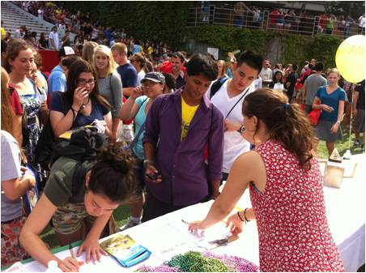
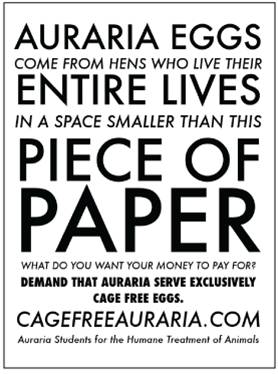

Cage-Free Campus
In 2005, The Humane Society of the United States (the HSUS) hatched a plan to replace conventionally produced eggs served on college campuses with cage-free alternatives, by appealing to students’ interest in social issues and addressing administrators’ practical concerns. Now led by The Humane League (THL) in the United States and by other organizations internationally, the campaign has resulted in millions of eggs now sourced from cage-free rather than “factory farming” facilities. A step-by-step playbook showing how to achieve campus-wide support and engage dining service managers guides student leaders implementing the campaign at their schools.
Background
Children's storybooks and popular lore depicted farming as a benevolent caretaker or family raising a few happy animals grazing in green fields under sunny skies. Those images bore no resemblance to modern animal agriculture in the U.S., Canada and much of Europe in 2005.
Because many, if not most, consumers wanted to pay as little for food as possible, with the exception of specialty products, food was a commodity. Unable to raise prices, suppliers worked to lower cost to increase profits. Producers reduced the cost of meat, poultry and egg products by keeping more animals in less space. The industrialization and consolidation of animal agriculture created factory farms with massive scale.
Millions of hens existed in battery cages. According to The HSUS’s website, “On average, each caged laying hen [was] afforded only 67 square inches of cage space—less space than a single sheet of letter-sized paper —on which to live her entire life. Unable even to spread their wings, caged laying hens [were] among the most intensively confined animals in agribusiness.” 1
In 1999, the European Union passed a law phasing out battery cages by 2012. But in North America, the practice persisted. In 2005, only about five percent of eggs came from cage-free facilities.2 Almost all of the 285 million hens used for production3 therefore lived in cages. In Canada, 98% of the nation’s 26 million egg-laying hens were caged.4
The HSUS decided to focus on intensively confined egg-laying hens because of the number affected, their poor quality of life and the length of time they spent in cages, about 10-12 months before slaughter.5 The group’s website later listed many studies showing that salmonella was more common in eggs from facilities using caged productions.6 Environmental organizations were also encouraging a switch to cage-free eggs to promote sustainability. According to the Sierra Club:
“Environmental problems associated with battery cage facilities include water, air, and soil pollution. Because these operations crowd large numbers of animals into a small area—often millions of birds at a single concentrated animal feeding operation—they generate a massive amount of manure and other animal waste. This manure frequently leaks, spills, or runs off into ground and surface water, killing fish and other aquatic life and contaminating drinking water supplies. These operations also produce dangerous amounts of ammonia and other gases that pollute the air.” 7
Setting Objectives
Primary audience:
- Persuade dining services managers to switch from conventional to cage-free eggs
- Measure success by number and percent of institutions making the switch, estimated number of eggs sourced cage-free, and estimated number of hens living outside of battery cages as a result
Secondary audience:
- Make students aware of the realities of egg production and engage them to support the change to cage-free eggs on their campus
- Inspire them to back protection issues in the future
Getting Informed
Although The HSUS did not conduct formal research on the needs of dining services, Josh Balk quickly learned from his conversations with managers that they focused on practical considerations, such as the availability and cost of cage-free product. He came to meetings ready to talk about food service operations and profitability, along with egg distribution and pricing.
The HSUS team carefully chose colleges as an important audience to influence initially. They use a lot of eggs! A single campus might go through hundreds of thousands or even millions each year.
A 2006 study of Millennials, aged 13 to 25 labeled them, “the most socially-conscious consumers to date,” 8 which made them an attractive audience for The HSUS to engage as partners to press for change. Josh noted: “Campuses are full of students interested in making the world a more humane place. They are advocates for change with a lot of potential to help animals, so we chose to focus on college.” 9
Once a campaign demonstrated that students wanted cage-free eggs, dining services managers couldn’t just brush off their requests. Food service and other campus administrators were often also interested to learn that using cage-free eggs could improve their score on The College Sustainability Report Card.
To help prioritize targets within a local area, THL considered each institution’s enrollment numbers and dining services provider. Schools that had a liberal lean or a “green” reputation were more attractive, because the students and administrators were more inclined to support the switch to cage-free eggs. People on campuses with large agriculture programs would likely be less enthusiastic, making these locations poor candidates for campaigns.
Delivering the Program
THL began working on the cage-free campus campaign in 2008, primarily around its headquarters in Philadelphia, Pennsylvania and later in the Baltimore, Maryland area. In 2010, the organization added Boston, Massachusetts and by 2014 was working in Charlotte, North Carolina and Dallas, Texas in 2010.
Despite The HSUS’s successes with the cage-free campus effort, the organization turned over the campaign to THL. THL had more focus on grassroots campaigning. In addition to leading its own campaigns, THL provided information and assistance to students on other campuses. Resources included a detailed campaign guide with step-by-step instructions for campus leaders to implement a cage-free initiative on their own.
Meeting the Dining Services Manager
For THL-led campaigns, David Coman-Hidy arranged fifteen-minute meetings with each school’s dining manager.10 He spoke with them about the benefits of cage-free eggs for sustainability, animal welfare and student health. The materials he shared reinforced the message and enhanced credibility by showing organizations outside of animal protection that supported cage-free eggs. (Building Motivation over Time)
The information packet included selections from the following:
- Cage-free fact sheet
- Images of hens in battery cages
- Environmental organizations’ quotes on cage-free eggs
- Recommendations of the Pew Farm Animal Report
- Report on animal welfare of egg production systems
- Food safety data on cage-free v. battery cage eggs
- Food industry professionals on why they switched to cage-free
- For nursing schools - nursing journal report on cage-free
- For Catholic schools - Catholic leaders on cage-free
(Vivid, Personalized, Credible, Empowering Communications)
David found that the more prestigious schools, especially those with a green reputation, were also interested in keeping up with peer institutions nationally or locally. He told administrators that: “National momentum in the country means that the schools that do not switch are growing more and more out of touch. Students have come to expect this from their institution when they are educated on the issue, and it is a very easy sell for the larger community as well (alumni, faculty, etc.) ” 11 (Norm Appeals)
Cage-Free Campus campaigns needed to address dining services managers’ business and financial considerations.
“It [was] important to also be clear on the facts that [would] most interest them: cost, marketing, and what other institutions [were] doing. A full switch to cage free cost… about $7 to $10 per semesterly meal plan.” 12
David cited polls from other campuses that… showed that students were overwhelmingly willing to absorb the cost of the change. Some schools, however, absorbed the cost themselves. (Overcoming Specific Barriers)
THL also offered to provide any marketing help that the managers might want once they made the switch, such as a press release, free posters, free table stands, and any other promotional materials.
Galvanizing the Students
Initially, THL would wait to engage students until after the initial meeting with the dining services manager. But David observed that there was rarely a reason to wait. The vast majority of dining managers wouldn’t just switch immediately, and even the ones who were leaning towards doing so would move more quickly when they saw students conducting campus outreach.
THL, therefore, began to invite students to join the campaign from the outset, including recruiting a committed campus leader (sometimes more than one) to spearhead the effort. Steps to engage leaders included identifying the vegetarian or environmental groups on campus, arranging to speak on cage-free eggs, and getting to know interested volunteers.
The campus leader began to mobilize the entire student body. The most important tactic was using a petition to document broad student support to show the dining services manager and other administrators. The petitions showed that students wanted the switch and were willing to pay for it.
Students Signing Petitions For Cage-Free Eggs
THL only conducted polls when necessary to more precisely estimate the percent of students in favor of the change and the amount they would be willing to pay to cover the extra cost. For example, there might be a sympathetic dining services manager who wanted to move to cage-free eggs, but needed more evidence of student backing before making the switch. David notes:
“Because this is a serious budgetary decision that a dining team must make, it’s important to work with each team and student body on an individual basis. Some schools are willing to absorb the cost or make changes in other purchases to cover it, but some will look to students to pay the difference and want to ensure that the fee increase will be acceptable.”

Photo by The Humane League
When THL implemented polls, more than 95% of students across campuses were willing to pay five dollars or more per semester to cover the incremental cost. (Building Motivation Over Time, Overcoming Specific Barriers)
The campus leader also showed widespread backing for the issue by creating a coalition of student activities groups, fraternities and sororities and going to student governments. THL provided materials to make it easy for the campus leader to spread the word on the campaign and work with other groups, including samples of:
- A poster
- A letter of support for groups to sign
- A resolution to take to the student government
- An op-ed for the school newspaper

Sample Poster. Source: Cage-Free Campaign Plan, the Humane League
Bringing Everyone Together
Representatives from these groups joined the campus leader to present the petitions, letters of support and student government resolution to the dining service manager and, optimally, someone from the office that oversaw dining’s contract, typically called “Business Services.” At that time, the campus leader asked the dining services manager to agree to switch to cage free eggs. (Obtaining a Commitment)
Some dining services managers made the commitment to change in these meetings, while others took a few days to think about it. Once managers agreed, THL rarely needed to monitor follow-through because the campaign publicized the commitment to switch to cage-free. On campuses where the manager still would not agree, THL and the campus leaders broadened their outreach to ask influential alumni, parents and donors to lend their voices to the campaign.
Because THL took a positive, professional approach, David and his team members formed ongoing relationships with many of the managers. THL built on this trust and credibility to invite the managers to consider other opportunities, such as introducing Meatless Mondays or offering more vegetarian or vegan options daily.
THL also continued its relationship with campus leaders by encouraging them to intern with the organization or get involved on other campaigns once the cage-free effort was complete on their campus. Several of the past campaigners became THL employees!
Financing the Program
Staff time made up most of THL’s investment for its cage-free campus campaigns. Minor out-of-pocket expenses included personnel’s transportation to campuses, information packets for the dining services managers, a campaign URL, supplies for petitions and sometimes a meal for the student volunteers.
When THL relied on a student to manage the effort, that individual could usually achieve success for the campaign in a single semester by dedicating five to ten hours per week.13
Measuring Achievements
The HSUS and THL measured results based on the number of schools switching to cage free eggs. Although they were able to get an estimate of the number eggs affected at some schools, they were not always able to do so.
Results
As of July 2014, THL reports that approximately 100 U.S. schools now use only cage-free eggs. About another 250 have implemented the switch for their purchases of eggs in shells, with decisions to change their liquid egg supply delayed until the cost differential compared to conventional liquid eggs declines. A single school such as UCLA 14, Rutgers 15 or the University of North Texas 16 uses over a million eggs per year. When making the switch, each school saves thousands of hens from living in cramped battery cages.
The most recent College Sustainability Report Card, in 2011, covering 322 schools in the U.S. and Canada, reported similar results. “A majority of schools (55 percent) report purchasing at least some cage-free eggs. Of these, 41 percent report purchasing all cage-free eggs.” 17
The campaign went beyond the U.S. The Vancouver Humane Society’s (VHS) ChickenOUT! Campaign targeted the University of Guelph (Ontario) as its first campus after an undercover investigation revealed cruel conditions at an egg production site owned by a veterinarian with ties to the school. VHS launched its campus efforts independently from The HSUS, but later coordinated with Josh and his colleagues, because both organizations were working with Compass Group, a dining services provider for schools, office cafeterias, and other organizations in both the U.S. and Canada.
VHS also looked for the best opportunities to leverage its resources. According to Leanne McConnachie, Director, Farm Animal Programs, “I purposely chose schools that had strong sustainability and environmental goals and ethical procurement policies to which I could link our message of more ethical sourcing of egg products. This ensured a more efficient use of my time, allowing me to focus on only those schools where there was a higher likelihood of success.” 18
Although VHS used targeting and tactics similar to what The HSUS had done, there were some differences. Leanne explains: “The cage-free campus campaign in Canada did require some strategic adaptations. We had supply management for eggs in Canada, and… it added a fair amount of complexity in terms of availability of cage-free eggs, and thus which campuses we could target, for which products, and when.” 19
VHS had led 17 Canadian academic institutions to reduce or eliminate the use of eggs from battery cage hens as of April 2014. The World Society for the Protection of Animals used VHS’s materials to move two more universities away from conventional eggs. Several other schools simply switched in response to the trend, without anyone initiating a campaign.20
An activist in Germany who heard about the cage-free campus initiative contacted Josh. With Josh’s guidance, he launched the campaign at the university he was attending. He then went on to spread it to other German universities and into Austria with support from the Albert Schweitzer Foundation. All 40 universities in Austria and 270 schools in Germany, nearly every one in that country, had gone cage-free as of April 2014.
All the campaigns extended beyond universities to businesses, including food service providers, fast food chains and other restaurants and grocers around the world. VHS even successfully worked with city councils to pass resolutions opposing battery-cage eggs, adopt cage-free egg purchasing policies for city-run food venues and encourage citizens to only purchase cage-free. While national figures for hens were not readily available, VHS estimated that by working with schools, businesses and governments in British Columbia, about 500,000 laying hens were living cage-free of 2.6 million total, nearly 20%, by 2014.21 In Germany cage-free barn systems accounted for over 60% of the hens in 2013.22
A 2013 article for WATTAgNet covered the growth of cage-free eggs in the U.S. and shared thoughts from representatives of a global equipment supplier to the egg production industry: “Based on equipment sales that have not been installed yet… the cage-free market percentage this time next year will be in the area of 8 percent…The growth in cage-free egg production that has been experienced so far has been driven by consumer and activist demand.” 23
Contacts
David Coman-Hidy
The Humane League
david@thehumaneleague.com
Caryn Ginsberg
Author, Animal Impact: Secrets Proven to Achieve Results and Move the World
Priority Ventures Group cginsberg@priorityventures.com
Notes
Lessons Learned
Working with Students as Leaders
The biggest change for THL by 2014 was to rely more on student volunteers to organize campus efforts. According to David: “Over time, we learned that the program could progress more efficiently when we involved students with the leadership of the campaign. Student outreach becomes much more powerful, and there are many benefits for the student leaders. THL acts more as consultants that give advice and support. For example, if we attend a student government meeting, we will have a student speak first, while the THL employee can give expert answers to technical questions etc.” 24
Mahi Klosterhalfen, who implemented the campaign in Germany and Austria, emphasized the importance of meeting student volunteers in person to form relationships that would support them at times when the campaign did not appear to be succeeding. He also managed expectations, telling students: “There may be sticking points; there may be a pause; but there is always a solution.” 25
Notes
The successful campus campaigns and subsequent efforts with businesses created demand that The HSUS used to convince distributors to make cage-free eggs more readily available. In the early years of outreach, Josh had to work with targets to phase in cage-free eggs, as there wasn’t enough supply available.”
“[When we first started] distribution was a concern. There were cage-free suppliers; they just weren't in the distribution channels. Because of all the movement that has occurred, distribution and supply issues have been eliminated. Any university or company can buy cage-free eggs now.” - Josh Balk
End Notes
1 “Cage-Free vs. Battery-Cage Eggs,” http://www.humanesociety.org/issues/confinement_farm/facts/cage-free_vs_battery-cage.html#.U0Mu_F4ravI. Accessed April 7, 2014.
2 “Bon Appétit Management Company Pledges To Sell Only Cage-Free Eggs,” http://www.bamco.com/press-releases/only-cage-free-eggs/. Accessed April 17, 2014.
3 Don Bell, Poultry Specialist, University of California Davis, “The Changing Disposition of Fowl From U.S. Table Egg Laying Farms 1997 to 2005,” http://animalscience.ucdavis.edu/avian/eeu106.pdf. Accessed April 17, 2014.
4 Toronto Vegetarian Association, “The Plight of Egg-Laying Chickens in Canada,” http://veg.ca/2005/11/29/the-plight-of-egg-laying-chickens-in-canada/. Accessed April 17, 2014.
5 United Poultry Concerns, “The Battery Hen: Her Life is Not for the Birds,” http://www.upc-online.org/batthen.html. Accessed April 7, 2014.
6 “The Humane Society of the United States Calls on Iowa’s Egg Industry to Phase Out Cage Confinement of Hens, Strengthen Food Safety,” http://www.humanesociety.org/news/press_releases/2010/08/egg_recall_081910.html. Accessed April 7, 2014.
7 Susan Prolman, “More Consumers Choosing Cage Free Eggs,” http://ventana.sierraclub.org/current/cageFree.shtml. Accessed April 10, 2014.
8 Cone Inc., “The 2006 Cone Millennial Cause Study,” http://download.2164.net/PDF-newsletters/2006MillennialCause.pdf. Accessed April 7, 2014
9 Ginsberg interview, for Animal Impact: Secrets Proven to Achieve Results and Move the World, 2011
10 David Coman-Hidy, “The Humane League Cage-Free Campaign Plan.” Private document. Much of the discussion on delivering the program comes from this source.
11 Coman-Hidy
12 Coman-Hidy
13 Coman-Hidy, via email, April 14, 2014
14 "UCLA Hatches New Cage-Free Egg Program,” http://www.humanesociety.org/news/press_releases/2010/05/ucla_051410.html?credit=web_id158983203, accessed July 30, 2014
15 Lisa Hagen, "Rutgers cracks, switches to cage-free eggs at students’ request,” http://www.nj.com/news/index.ssf/2013/08/rutgers_university_makes_switch_to_cage-free_eggs_after_three-year_student_campaign.html, accessed July 30, 2014”
16 Patricia Sims, "Petition helps spur UNT Dining to implement cage-free eggs,” http://ntdaily.com/petition-helps-spur-unt-dining-to-implement-cage-free-eggs/, accessed July 30, 2014. Average of 260 eggs per year per factory-farmed hen: MSPCA, “Factory Farming / Laying Hens,” http://www.mspca.org/programs/animal-protection-legislation/animal-welfare/farm-animal-welfare/factory-farming/chicken/eggs.html, accessed July 30, 2014
17 Sustainable Endowments Institute, “Food & Recycling,” http://www.greenreportcard.org/report-card-2011/categories/food-recycling. Accessed April 7, 2014.
18 McConnachie, via email, April 14, 2014
19 McConnachie email
20 McConnachie email
21 McConnachie email
22 Terrence O’Keefe, “Growth of US cage-free egg production expected to continue,” http://www.wattagnet.com/Growth_of_US_cage-free_egg_production_expected_to_continue.html. Accessed April 17, 2014.
23 O’Keefe
24 Coman-Hidy, via email, April 14, 2014
25 Ginsberg interview, 2011